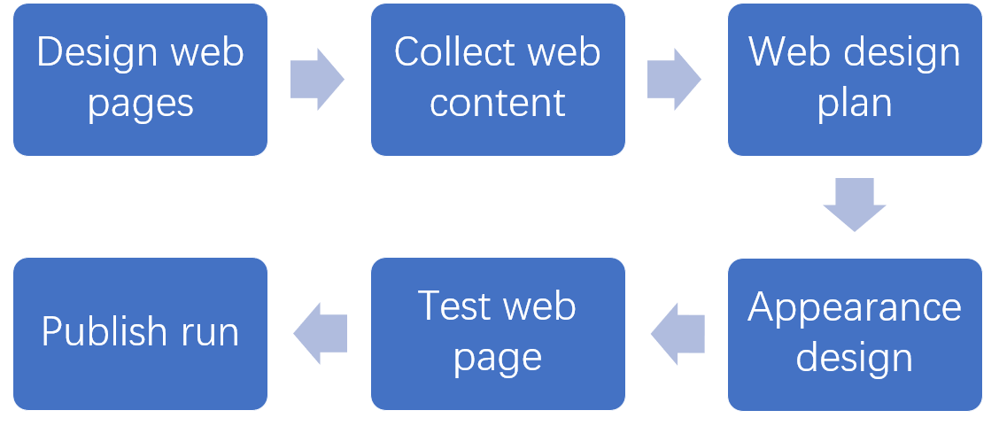
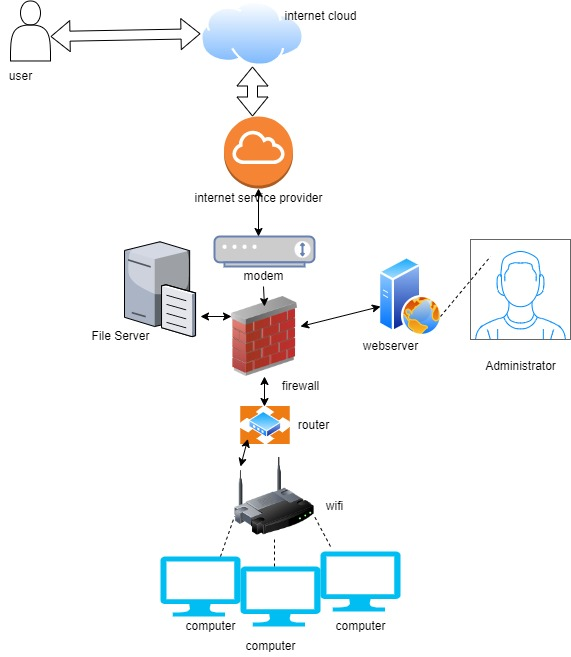

Web page making
| Chinese name | English name | Address | zip code | Telephone | |
|---|---|---|---|---|---|
| Liang Anyuan | Lay | Yinzhou District, Ningbo, Zhejiang, China | 315000 | 940476142@qq.com | 18758397609 |
Article By:Lay
Values
Quality, respect, innovation and firmness. The designed website needs to ensure the quality of this website. The quality of the website needs to meet the standards and meet the needs of customers. Our website design needs to respect the needs of customers, design according to the requirements of customers, innovate in the requirements of customers, and make the website firmly available.
Production process
1. First, make a preliminary plan for the whole website and how to make it. 2. After having a preliminary plan, collect the required data according to the customer's requirements. And collect all kinds of information needed by the website. 3. Design the website with more preliminary plans, and complete the design content of the web page for more specific expansion plans. 4. After determining the content of the design, design the appearance of the website to make it more beautiful and improve customers' satisfaction with the website and their first impression of the website. 5. After completing the above steps, the basic design of the website is completed, the website is running and tested to ensure that the website can run, and the firmness of the website is tested. 6. After completion, the website can be published and delivered to customers.
 table, th, td { border: 1px solid rgb（114,7，7） padding: 5px; } table { border-collapse: collapse; border: 2px solid rgb(23, 6, 122); } thead th { width: 25%; } .cell-highlight{ background-color: gold; font-weight:bold; }
questionnaire
| Pingyin name | Wang Yijian | Wang Huiyu |
| English name | Mark | Carroll |
| Name this system? | Web page making system | Web page making system |
| What are the system objectives? | Making web pages | Help people make shopping web pages |
|---|---|---|
| List 3 essential system features and components? | 1. Firewall: a protective barrier between the environment acting on the internal and external networks. 2. Manager: manage the network. 3. File server: it enhances the function of memory and simplifies the management of network data. | 1. internet cloud, Manage stored data and store data on any computer. 2. internet service provider, Provide Internet access services to customers through mobile networks. 3. Modem, realize the communication between two devices |
| List 3 essential hardware from this system. | 1. Lenovo y7000p 2. i7-12700H 3. GeForce RTX™ 3050 | 1.wifi. 2. Modem. 3. Lenovo y7000p. |
| List 3 essential software from this system. | 1.HTML editor 2. Notepad 3. CSS editor | 1. HTML editor.2. CSS editor. 3. Notepad |
| List 2 external system components. | 1. Customers. 2. Suppliers. | 1. Internet cloud. 2. Customers. |
| List 2 system benefits | 1. There is a file server. It can store and manage files for easy access on other computers. 2. There is a firewall, which acts as a protective barrier between the environment of internal and external networks. | 1.Modem can use analog signals to realize the communication between two devices. 2. The Internet cloud allows customers to use and store data anytime, anywhere. |
| List 2 project difficulties: | 1. complicated operation. 2. The production time is long. | 1. More personnel are needed. 2. It takes a long time. |